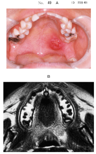
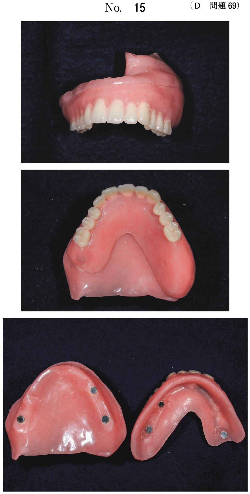
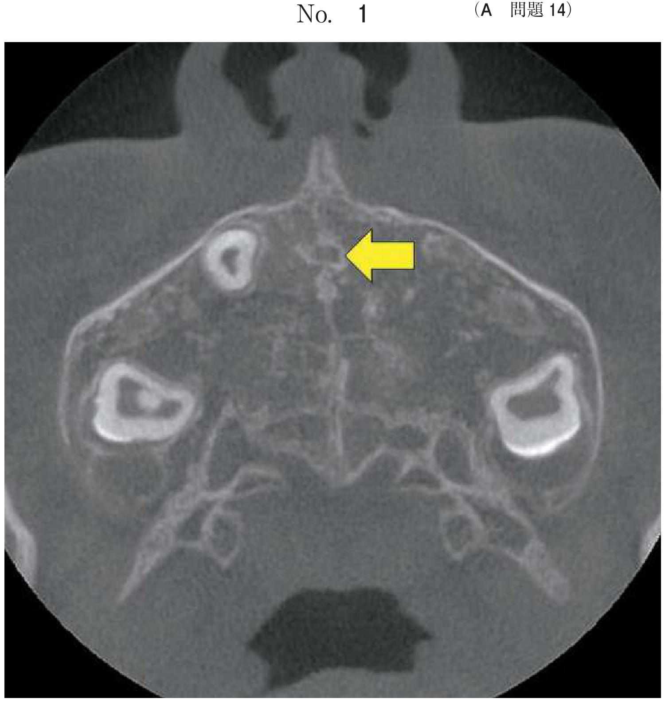
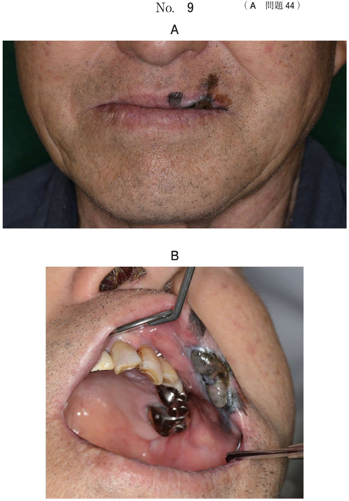
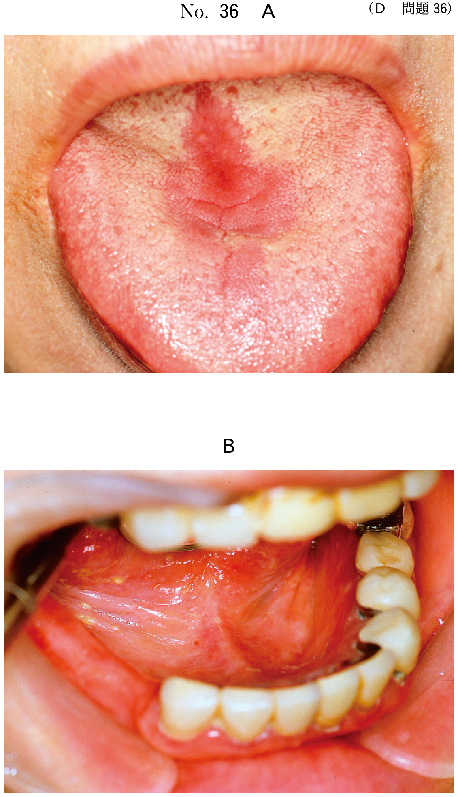
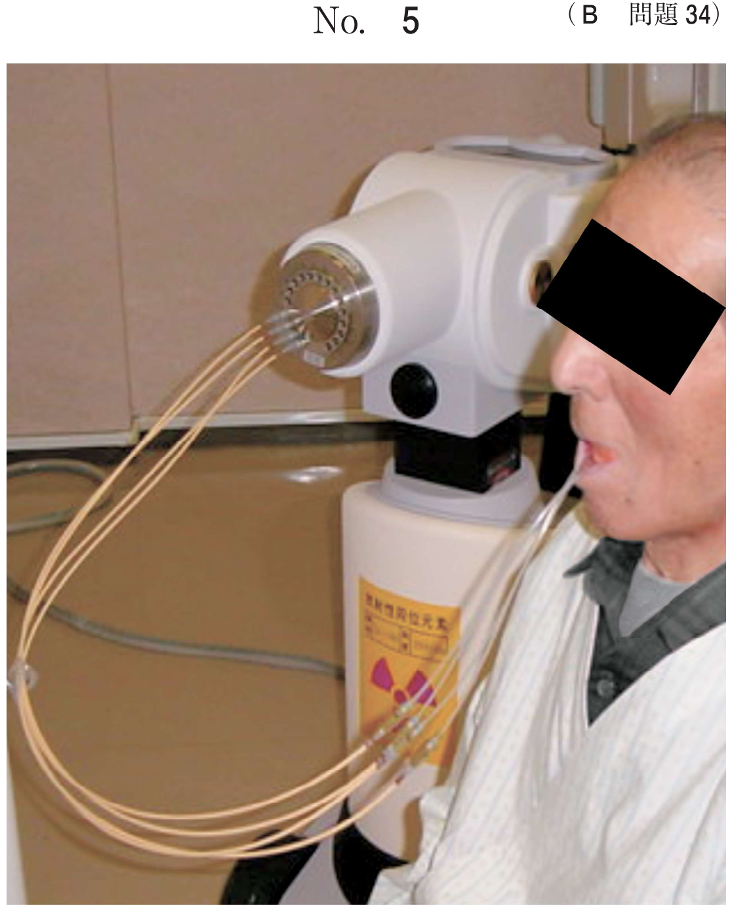
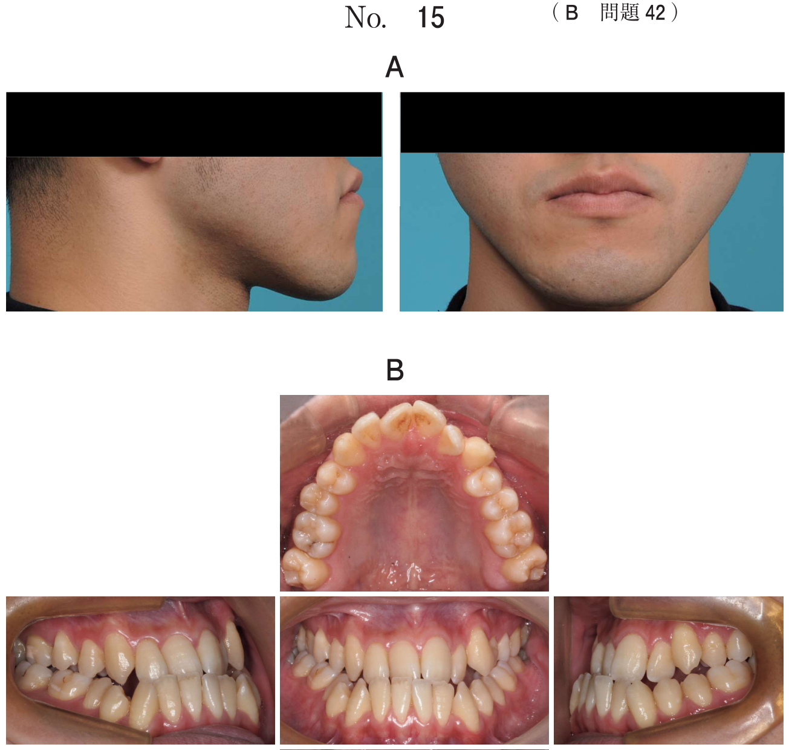
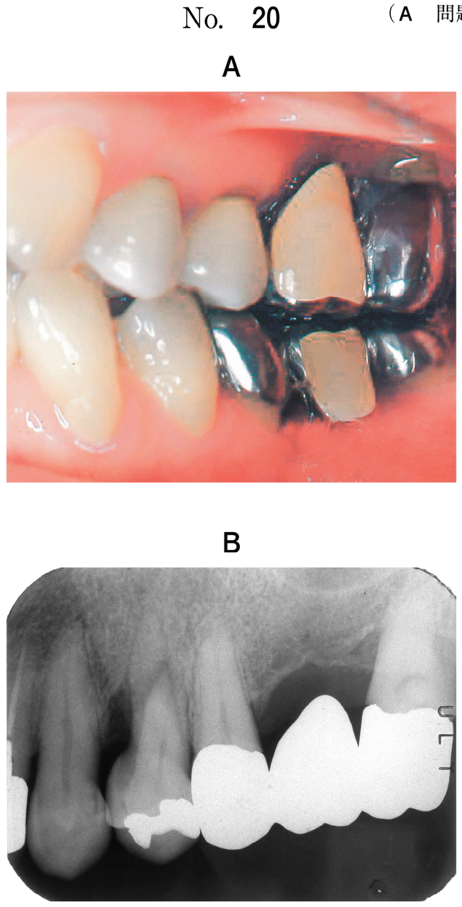

唾液腺悪性腫瘍のWHO分類（2005年）では、腺房細胞癌、粘表皮癌、腺様嚢胞癌、多型低悪性度腺癌、上皮・筋上皮癌、基底細胞腺癌など多くの組織型が含まれる。国試で特に重要なのは粘表皮癌と腺様嚢胞癌である。
| 組織型 | 頻度 | 好発部位 |
|---|---|---|
| 粘表皮癌 | 唾液腺悪性腫瘍で最多（全体の約1割） | 耳下腺、口蓋 |
| 腺様嚢胞癌 | 小唾液腺腫瘍で多形腺腫に次いで多い | 口蓋、口底 |
| 腺房細胞癌 | 約1% | 耳下腺（80%以上） |
| 多型低悪性度腺癌 | まれ | 口蓋（小唾液腺） |
唾液腺悪性腫瘍で最も頻度が高い。扁平上皮、粘液産生細胞、中間型細胞の3種の細胞から構成される。従来より良性・悪性についての論議がなされてきたが、本腫瘍のすべてが悪性能を有するという見解である。
| 分類 | 高分化型（低悪性型） | 低分化型（高悪性型） |
|---|---|---|
| 細胞構成 | 粘液産生細胞が50%以上 | 粘液産生細胞は10%以下 |
| 嚢胞形成 | 明らか | なし（充実性） |
| 浸潤性 | 被膜あり | 周囲組織への浸潤あり |
| 5年生存率 | 約70% | 約10% |
25歳の女性。口蓋の腫脹を主訴として来院した。2か月前から自覚していたが、無痛性のため放置していたという。既往歴に特記事項はない。腫脹は弾性軟で、可動性に乏しい。圧痛はなく、所属リンパ節の腫脹は認められない。初診時の口腔内写真（別冊No.49A）とMRI（別冊No.49B）及び生検時のH-E染色病理組織像（別冊No.49C）とムチカルミン染色病理組織像（別冊No.49D）を別に示す。 診断名はどれか。1つ選べ。

【解説】口蓋の無痛性腫瘤で、ムチカルミン染色が施されている点がヒント。ムチカルミン染色で陽性の粘液産生細胞が確認できれば粘表皮癌と診断できる。Warthin腫瘍は耳下腺に好発し口蓋には生じない。腺様嚢胞癌は篩状型の組織像を呈する。
43歳の女性。口蓋部の腫瘤を主訴として来院した。2か月前に無痛性腫瘤 に気付いたという。圧痛はなく、触診にて弾性硬である。初診時の口腔内写真（別冊No.20A）と摘出物のH-E染色病理組織像（別冊No.20B）を別に示す。 診断名はどれか。1つ選べ。

【解説】43歳女性、口蓋の無痛性・弾性硬の腫瘤。口蓋は多形腺腫と粘表皮癌の鑑別が重要な部位である。病理組織像で扁平上皮細胞・粘液産生細胞・中間型細胞の混在が確認されれば粘表皮癌と診断される。多形腺腫は上皮成分と間葉成分（粘液腫様・軟骨様）の混在を示す。
43歳の女性。口蓋部の腫脹を主訴として来院した。3年前に気付き、その後徐々に大きくなったという。腫脹は弾性硬である。初診時の口腔内写真（別冊No.5A）、MRI T2強調像（別冊No.5B）及び生検時の H-E 染色病理組織像（別冊No.5C）を別に示す。 診断名はどれか。1つ選べ。

【解説】43歳女性、口蓋部の弾性硬の腫脹で3年の経過。低悪性型の粘表皮癌は発育が緩慢で多形腺腫に類似した臨床像を呈する。病理組織像で粘液産生細胞と扁平上皮細胞が確認されれば確定診断となる。腺房細胞癌は耳下腺に好発し口蓋にはまれ。
46歳の女性。硬口蓋の腫脹を主訴として来院した。2週前に自覚したが自発痛はないという。左側硬口蓋に境界明瞭な膨隆を認める。初診時の口腔内写真（別冊No.20A）、エックス線画像（別冊No.20B）、脂肪抑制造影MRIT1強調像（別冊No.20C）及び生検時のH-E染色病理組織像（別冊No.20D）を別に示す。 診断名はどれか。1つ選べ。

【解説】46歳女性、硬口蓋の境界明瞭な無痛性膨隆。病理組織像が診断の鍵で、粘液産生細胞・扁平上皮細胞・中間型細胞の混在が確認されれば粘表皮癌と診断される。口蓋膿瘍は炎症所見（発赤・圧痛・波動）を伴う。
篩状の胞巣形成をきわめて緩徐な発育と著明な浸潤性増殖を示す悪性腫瘍である。神経浸潤と遠隔転移が臨床的に大きな特徴である。
| 組織型 | 特徴 | 悪性度 |
|---|---|---|
| 篩状型 cribriform | 篩状（ふるい状）の胞巣形成、偽嚢胞（基底膜物質の蓄積） | 中等度 |
| 管状型 tubular | 腺管構造を形成 | 低い |
| 充実型 solid | 充実性の胞巣、嚢胞形成なし | 高い |
60歳の女性。左側口底部の腫瘤を主訴として来院した。1年前から自覚していたという。初診時の口腔内写真（別冊No.47A）と生検時のH−E染色病理組織像（別冊No.47B）とを別に示す。 この疾患の特徴はどれか。すべて選べ。

【解説】口底部腫瘤の病理像から腺様嚢胞癌と診断される。遠隔転移が多い（a○、血行性に主に肺へ）。発育はきわめて緩徐（b×）。神経浸潤が特徴的（c○）。化学療法の効果は限定的（d×）。口腔では口蓋に好発する（e○）。
口底部の腫瘤の口腔内写真（別冊No.9A）と生検時の H-E 染色病理組織像（別冊No.9B）を別に示す。 この疾患の特徴はどれか。2つ選べ。

【解説】口底部腫瘤の病理像から腺様嚢胞癌と診断される。遠隔転移しやすい（a○、血行性に肺へ）。放射線感受性は低い（b×）。被膜はなく浸潤性に増殖（c×）。リンパ節転移は少ないが「ない」わけではない（d×）。神経組織への浸潤が本腫瘍の最大の特徴である（e○）。
76歳の女性。左側口底部の腫脹を主訴として来院した。かかりつけ歯科医にて指摘されたという。触診で粘膜下に境界明瞭なやや硬い腫瘤を触れる。舌下小丘からの唾液の流出は良好である。初診時の口腔内写真（別冊No.24A）、造影CT（別冊No.24B）、MRI脂肪抑制T2強調像（別冊No.24C）及び生検時のH-E染色病理組織像（別冊No.24D）を別に示す。 診断名はどれか。1つ選べ。

【解説】76歳女性、口底部の境界明瞭なやや硬い腫瘤。唾液排出は良好で唾石症は否定。病理組織像で篩状型の胞巣形成（ふるい状の構造）が確認されれば腺様嚢胞癌と診断される。ラヌーラは青紫色の嚢胞性病変で充実性腫瘤とは異なる。類皮嚢胞は正中部に好発する。
漿液性腺房細胞に類似した細胞増殖を特徴とする腫瘍で、唾液腺腫瘍の約1%を占める。
75歳の女性。左側口底の腫瘤を主訴として来院した。5か月前に気付いたが、疼痛がないためそのままにしていたという。初診時の口腔内写真（別冊No.27A）、CT（別冊No.27B）、MRI T2強調像（別冊No.27C）及び生検時のH-E染色病理組織像（別冊No.27D）を別に示す。 適切な治療法はどれか。1つ選べ。

【解説】75歳女性、口底の無痛性腫瘤。病理組織像から唾液腺腫瘍と診断される。唾液腺腫瘍の治療は外科的切除が原則であり、腫瘤切除が適切である。開窓は嚢胞に対する処置、切開排膿は膿瘍に対する処置であり不適切。抗癌剤のみでの治療は唾液腺腫瘍には一般に有効性が低い。
| 項目 | 粘表皮癌 | 腺様嚢胞癌 | 腺房細胞癌 |
|---|---|---|---|
| 頻度 | 悪性で最多 | 小唾液腺で多い | 約1% |
| 好発部位 | 耳下腺、口蓋 | 口蓋、口底 | 耳下腺 |
| 好発年齢 | 30〜40歳代 | 40〜70歳 | 30〜40歳代 |
| 特徴的所見 | ムチカルミン染色陽性 | 神経浸潤 | 腺房様細胞 |
| 組織型 | 扁平上皮＋粘液＋中間型 | 篩状型・管状型・充実型 | 漿液性腺房様 |
| 転移様式 | リンパ節・遠隔 | 血行性（肺） | 局所再発・遠隔 |
| 予後 | 悪性度による | 長期予後不良 | 比較的良好 |